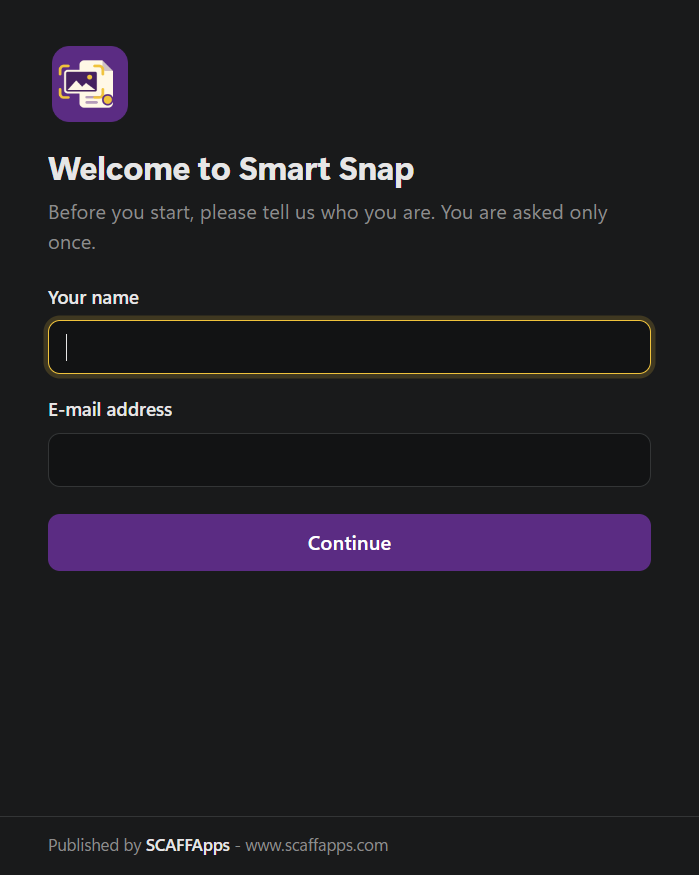
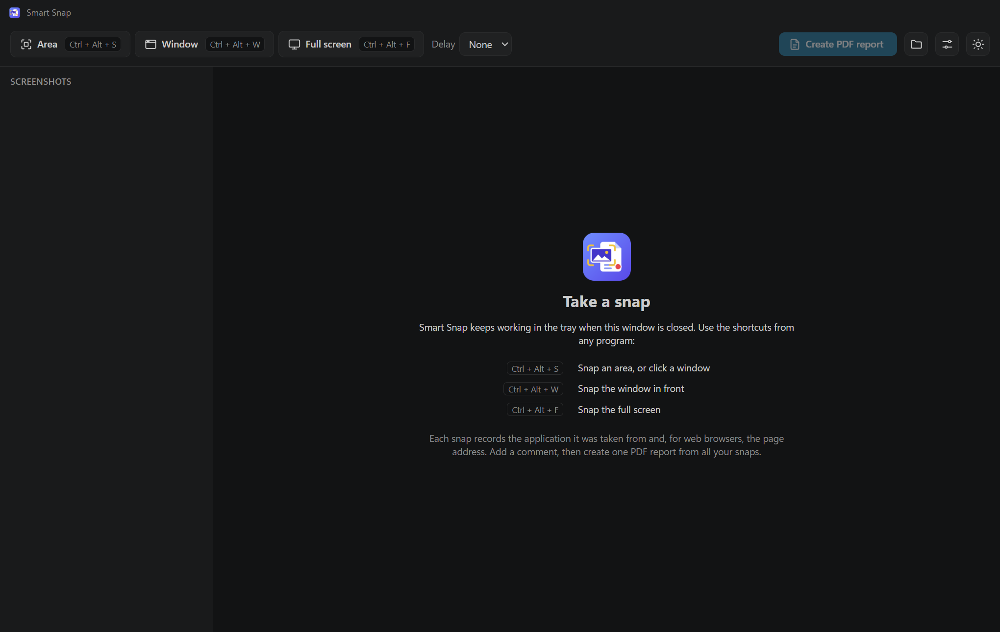
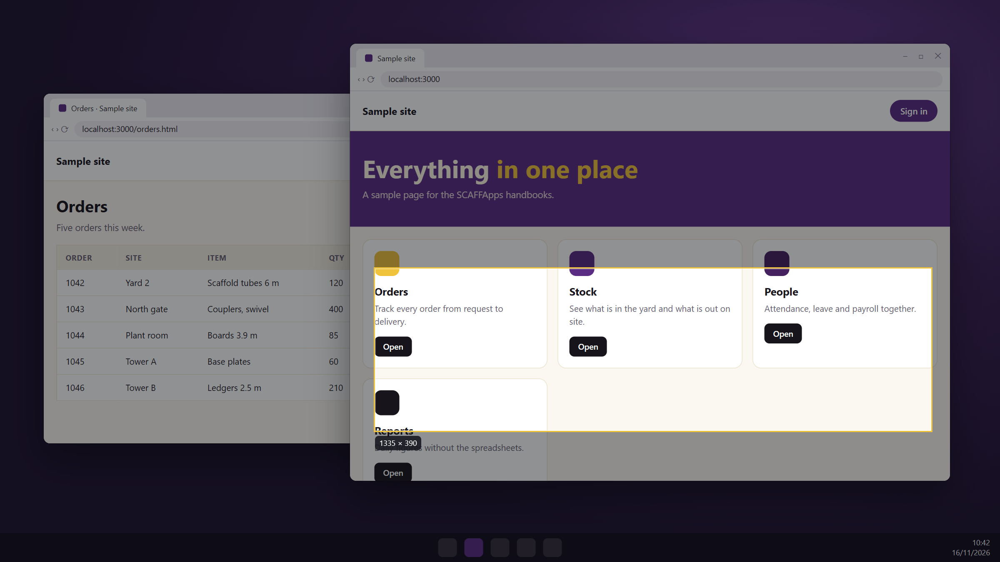
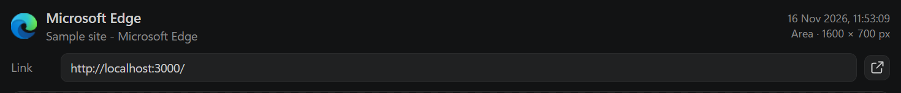
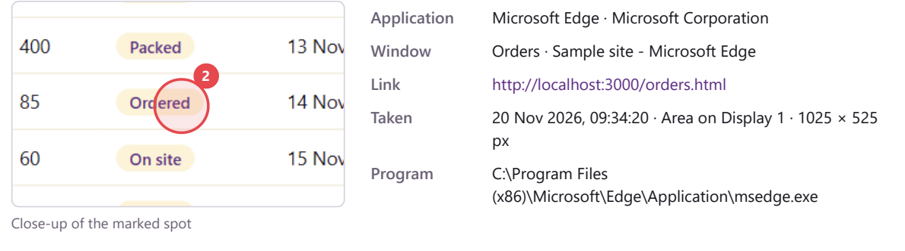
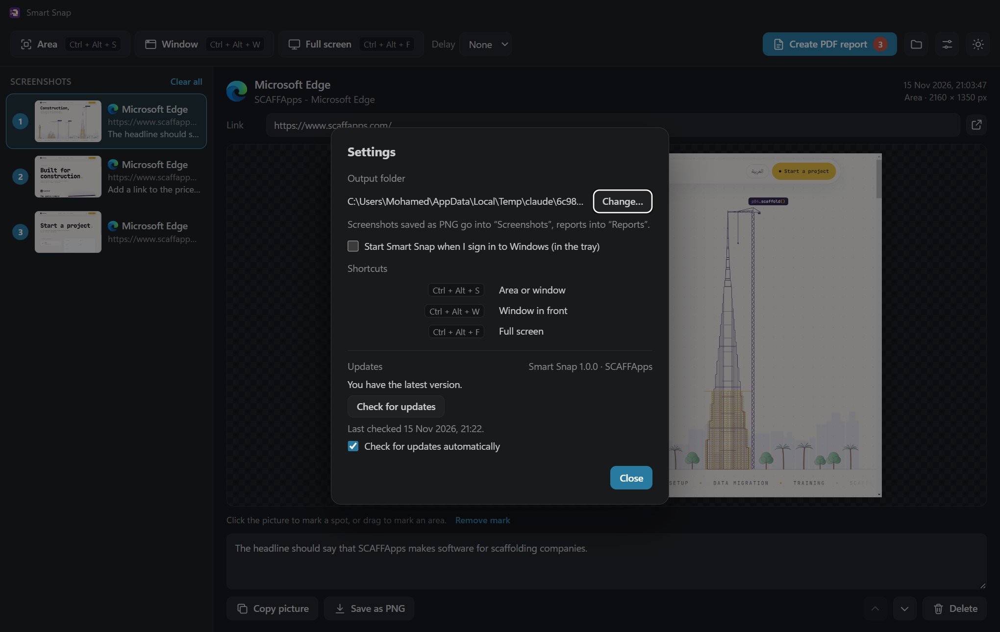
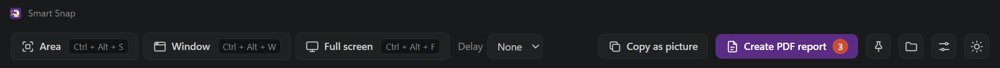
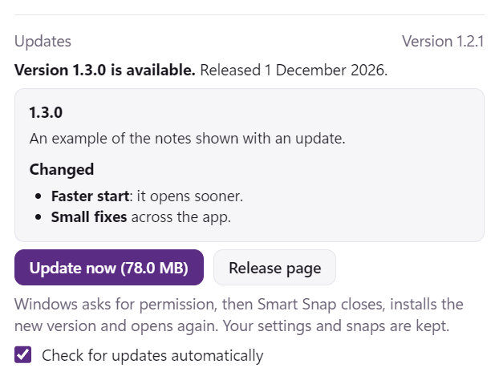
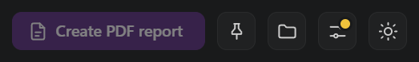

Smart Snap is a screenshot tool for people who report what they see on screen: website reviews, software testing, support cases, site records.
An ordinary screenshot is just a picture. Weeks later nobody remembers which program it came from or which page was open. Smart Snap keeps that with every picture, by itself: the application, its window and, for web browsers, the page address.
Snap an area, a window or the whole screen from any program with one shortcut. Explain each snap with a comment and a mark on the spot or area you mean. Then hand over one PDF report, with links that can be clicked.
It works like Multi Screens. If you use Multi Screens, the notes, marks, list and report will be familiar: Multi Screens reviews web pages in its own window; Smart Snap works on anything on your desktop.
The SCAFFApps team
The light appearance: the sun or moon button switches it.
Smart Snap handbook · Version 1.1
INSTALL
Chapter 01 · Getting started
Install once. Snap from anywhere.
One installer, for 64-bit Windows 10 and 11. Smart Snap installs for everyone on the computer, with its shortcut in the Start menu's SCAFFApps folder.
DownloadSmart-Snap-Setup-1.1.x.exe from the Releases page, or install it from the SCAFFApps Suite.
InstallWindows asks for permission once. A page asks where to save pictures and reports.
Your name, onceThe first SCAFFApps app on a Windows account asks for your name and e-mail. The others do not ask again.
A first reportPress Ctrl + Alt + S, drag over a part of the screen, add a comment, and create the PDF.

The first start: your name and e-mail address, asked once on each Windows account.
The output folder
Everything Smart Snap saves goes into one folder you choose, Documents\Smart Snap unless you pick another: the installer asks, or the app asks once on its first start when the SCAFFApps Suite installed it. Inside are Screenshots, for pictures saved as PNG, and Reports, for the PDFs. The folder button in the top bar opens it.
Good to know
"Windows protected your PC" may show the first time, because the installer is not code-signed. Choose More info, then Run anyway.
Remove it from Windows Settings, Apps, like any program. Your output folder is kept.
Coming from a portable copy? Run the installer once, then delete the old file.

Before the first snap: the window lists the three shortcuts. Closing it leaves Smart Snap in the tray.
Smart Snap handbook · Install and start
WINDOW
Chapter 02 · The window at a glance
Your snaps. One at a time.
The bar takes snaps and makes the report; the list on the left holds every snap in report order; the right side is the snap you are working on.
Three snaps of a sample site. The first is selected, with an area marked and a comment.
Part
What it is for
Area, Window, Full screen
Take a snap. Each button shows its shortcut (next chapter).
Delay
Waits 3, 5 or 10 seconds before the snap, so you can open a menu first.
Copy as picture
The whole report on the clipboard as one picture, to paste into a chat. The snaps stay.
Create PDF report
Turns the snaps into one report. The number is how many snaps are waiting.
Pin · folder · sliders · sun or moon
Keep Smart Snap above other programs · the output folder · Settings (a gold dot when an update is waiting) · dark or light.
The list
Every snap, numbered in report order, with its application, link and comment.
The selected snap
The application, window and link at the top; the picture; the comment; copy, save, reorder, delete.
Smart Snap handbook · The window at a glance
SNAP
Chapter 03 · Taking a snap
One shortcut. From any program.
The three kinds are shortcuts that work everywhere, buttons in the bar and items in the tray menu. A button hides Smart Snap first, so it takes the window you were using, not itself.
Kind
Shortcut
What it takes
Area
Ctrl + Alt + S or PrtScn
Any rectangle you drag, or a window you click.
Window
Ctrl + Alt + W
The window you are using, without its shadow.
Full screen
Ctrl + Alt + F
The whole display the mouse is on.

Drag for a rectangle and let go: the comment box opens beside it. Type, then Enter saves the snap. (A sample desktop.)
Or click a window: the one under the mouse is outlined in gold, with its name and size.
The screen dims, still liveA short guide shows at the top. Esc or a right-click cancels.
Drag or clickPress, drag and release for a rectangle; click for the window under the mouse; Enter for the whole display.
Write the commentIn the box beside the area. Save and open opens Smart Snap to mark a spot; Esc discards the snap.
Menus and several monitors
A menu closes when you press a shortcut: choose a Delay (or Snap an area in 5 seconds in the tray menu), then open the menu while Smart Snap waits. After a delay the screen freezes first, so the menu stays in the picture.
With more than one monitor every monitor dims, and you can drag on any of them.
Smart Snap handbook · Taking a snap
RECORD
Chapter 04 · What each snap records
Where it came from. By itself.
At the moment of the snap, Smart Snap asks Windows which window is there and notes what follows. There is nothing to set up.

At the top of a snap: the application with its icon, the window title, when and how it was taken, and the link.
Item
Where it comes from
Application
The program that owns the window, by the name its maker gives it ("Microsoft Edge", "Excel"), with its version, company and icon. For an area snap, the window in the middle of the area.
Window
The window's title, as in its title bar or taskbar button. For most programs it names the open document or page.
Link
For web browsers, the address in the address bar: Chrome, Edge, Brave, Opera, Vivaldi, Firefox and the like.
Folder
For File Explorer, the folder being shown.
Taken
The date and time, the kind of snap, the display, and the picture's size in pixels.
Program
Where the program's file is, to tell apart two programs with the same name.

In the report, under each snap: the close-up of the mark, and the details.
About links
Chrome and Edge hide https:// in the address bar: Smart Snap puts it back, so the link works. Addresses on your own network (localhost, 192.168.…) get http://.
A link that is wrong or missing can be corrected in the snap's Link box.
Smart Snap handbook · What each snap records
EDIT
Chapter 05 · Working on a snap
Say what you mean. Point at it.
Click a snap in the list to work on it. Everything is saved as you go: there is no Save button.
A snap being worked on, in the light appearance: a spot marked on the table, and its comment.
To
Do this
Add a comment
Type in the box under the picture (an area snap asks for it as you take it). It shows above the picture in the report.
Mark a spot
Click the picture: a circle is drawn.
Mark an area
Drag on the picture: a box is drawn.
Remove the mark
Remove mark. A new mark replaces the old one.
Fix the link
Type in the Link box; clear it to leave the link out.
To
Do this
Copy the picture
Copy picture, or Ctrl + C when you are not typing.
Save the picture
Save as PNG puts it in Screenshots, named after the application and time.
Change the order
The up and down arrows move it in the report.
Delete
Delete removes the snap; Clear all, above the list, every snap.
Move through the list
↑ and ↓.
Snaps are kept until you create a report or delete them, also after closing Smart Snap or restarting the computer: a report can be built up over several days.
Smart Snap handbook · Working on a snap
REPORT
Chapter 06 · The PDF report
Every snap, one PDF.
Press Create PDF report. A short form asks for a title and who prepared it; the PDF is saved in the Reports folder. Choose Open or Show in folder when it is ready.
The report form.
TitlePrinted at the top and used for the file name; "Screenshot report" when left empty.
Prepared byOptional, and remembered for next time.
Keep the screenshotsOff to begin with: the snaps leave Smart Snap once they are in the PDF, ready for the next job.
Copy as pictureThe whole report on the clipboard as one picture, to paste into a chat or an email. Nothing is saved and the snaps stay.
Creating a report clears its snaps
Unless you tick Keep. Open the PDF and check it before moving on: a report cannot be made again once its snaps are gone.
The summary: title, who prepared it, when, how many, which applications, and every snap with its link.
One section per snap: the comment, the picture with its mark, a close-up, and the details.
Smart Snap handbook · The PDF report
SETTINGS
Chapter 07 · Settings and the tray
Set it once. Ready every day.
The sliders in the top bar open Settings: where files go, starting with Windows, the shortcuts, and updates.

Settings, with the Updates part at the bottom.
Setting
What it does
Output folder
Where screenshots and reports are saved. Change… picks another folder; files already saved stay where they are.
Start with Windows
Starts Smart Snap in the tray when you sign in.
Shortcuts
The shortcuts, and whether PrtScn snaps an area. If another program or Windows' Snipping Tool holds a key, it says so here.
Updates
The version you have, and new versions (next page).
It lives in the tray
Smart Snap puts its icon next to the clock. Closing the window does not stop it: it keeps running, so the shortcuts work from any program. Click the icon to open the window; right-click it for the menu, which also has Quit. Tick Start Smart Snap when I sign in to Windows in Settings to have it ready every day.
Good to know
Settings ends with Published by SCAFFApps - www.scaffapps.com.
The dark and light appearances use the same colours as Multi Screens and Instant Share.

The bar: each snap button shows its shortcut; Settings is the sliders, at the right.
Smart Snap handbook · Settings
UPDATE
Chapter 08 · Updates
Always the newest. Never a fuss.
Smart Snap checks for a newer version by itself, shows what is new, and installs it when you say so. Your settings and the snaps waiting for a report stay as they are.

Settings, when a newer version is out. The version and notes shown are an example.
Checked for youA few seconds after it starts, and once a day while it runs, it asks GitHub for the newest version. A message says so once, and the Settings button carries a gold dot. Check for updates, also in the tray menu, asks straight away.
What is newThe new version's notes show in Settings.
Update nowDownloads it and checks it against the checksum published with it. A file that does not match is not used.
Installed in placeWindows asks for permission; Smart Snap closes, installs the new version and opens again.

A newer version is out: the Settings button carries a gold dot until you update.
Nothing about you
A check asks only for the version number: nothing about you or your snaps is sent, and nothing is downloaded until you choose to.
The SCAFFApps Suite
Installs, opens and updates Smart Snap and the other SCAFFApps apps from one window.
Turning the checks off
Clear Check for updates automatically: GitHub is then asked only when you choose to.
Smart Snap handbook · Updates
KEYS
Chapter 09 · Shortcuts and troubleshooting
The keys. The fixes.
Keys
Where
Action
Ctrl + Alt + S or PrtScn
Anywhere
Snap an area or a window.
Ctrl + Alt + W
Anywhere
Snap the window in front.
Ctrl + Alt + F
Anywhere
Snap the full screen.
Esc or right-click
Choosing an area
Cancel.
Enter
Choosing an area
Take the whole display.
↑↓
Smart Snap window
The previous or next snap.
Ctrl + C
Smart Snap window
Copy the picture.
What it does not do
No scrolling
A snap holds what is on screen, not the whole length of a web page.
The address bar's link
If you were typing in it, the typed text is taken. A web app without an address bar gives no link.
Protected content
Windows shows some video players and private windows as black in every screenshot.
If something is not right
What you see
What to do
"Windows protected your PC"
Choose More info, then Run anyway. The installer is not code-signed.
A shortcut does nothing
Check that Smart Snap is in the tray. Settings says if another program holds the shortcut.
PrtScn opens the Snipping Tool
Windows takes the key: Settings in Smart Snap opens the Windows page to turn that off.
The wrong application is recorded
For an area snap, the window in the middle of the area counts. For a window snap, click the window first.
No link for a web page
The browser may be unusual or busy: type the address into the Link box.
The application's name or icon is missing
The program may be running as administrator. The picture is still taken.
Old snaps are in a new report
Snaps stay until reported or deleted: delete them first, or use Clear all.
A picture or report is missing
Press the folder button in the top bar.
Need a hand?
Write to info@scaffapps.com with what you see and what you expected.
Say which version you have: Settings, under Updates.
Start fresh
Clear all, above the list, removes every snap after asking.
Windows only: Smart Snap relies on Windows to name the window and read the browser's address.
Smart Snap handbook · Shortcuts and help
SCAFFApps/Smart Snap·Published by SCAFFApps
Useful apps
for every laptop.
Smart Snap is one of the SCAFFApps apps: small, focused tools for people who work on a laptop all day. Each installs in a moment and keeps itself up to date.
Multi Screens
Smart Snap
Instant Share
SCAFFApps Suite
+And more to come
Every app, in one window.
The SCAFFApps Suite installs, opens and updates them all, and updates itself: one place to see which version you have and what is new. Get it, and every app, from github.com/Rady193.


 Multi Screens
Multi Screens Instant Share
Instant Share SCAFFApps Suite
SCAFFApps Suite